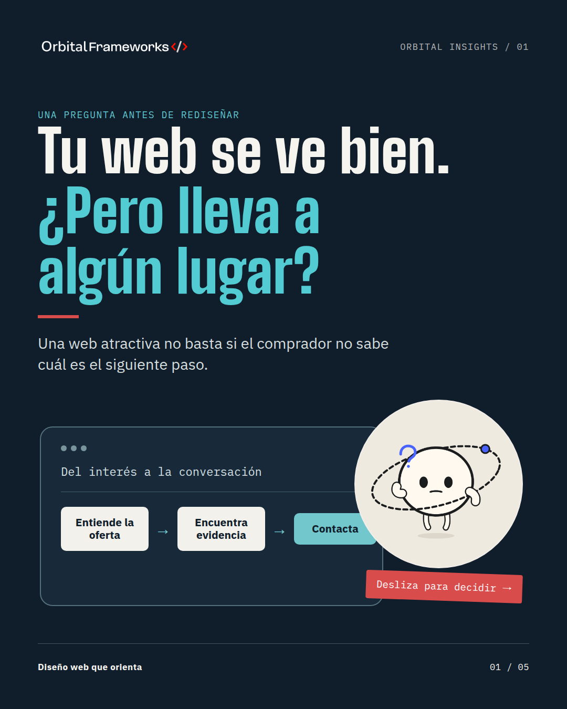

OF
Orbital Frameworks
Documento · vista simulada
¿Tu web realmente ayuda al cliente a dar el siguiente paso?
Una landing y una web corporativa resuelven necesidades distintas…
ver más

Carrusel de 5 páginas · Preview editorial